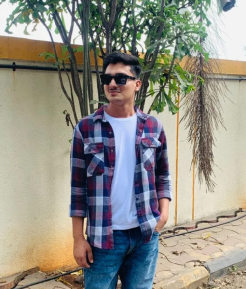

Fake news spreads 6 times faster than the truth. Learn to spot misinformation, protect your community, and report malicious content online.
See where fake news and misinformation are breaking out right now based on crowdsourced community reports.
More likely to be retweeted than true stories, according to MIT researchers.
The estimated annual economic cost of fake news globally.
Social media manipulation campaigns identified in almost every major democracy.
Social media algorithms are designed to show you content that reinforces your existing beliefs, blocking out opposing factual views and insulating fake news.
Automated accounts (bots) are programmed to simultaneously like, share, and comment on fake news articles to artificially inflate their perceived popularity.
Fake news preys on powerful emotions like fear, anger, and outrage. When we are emotionally triggered, our critical thinking skills are bypassed.
Every time you pause before sharing, verify a claim, or report misinformation on DrishtiX, you help create a safer digital environment for everyone.
Take the Knowledge QuizEmpowering internet users with the knowledge to identify and verify information, built by students to protect digital societies globally.
DrishtiX is an advanced "Social Media and Fake News Awareness" platform engineered to combat the rapid proliferation of digital misinformation. In an era where AI-generated deepfakes, clickbait journalism, and viral WhatsApp hoaxes spread faster than the truth, our society faces severe risks ranging from polarized elections to public health crises. We built DrishtiX to arm internet users with the critical thinking frameworks and technical tools required to navigate the modern web safely.
Established in 2014 in Ravet under the visionary Pimpri Chinchwad Education Trust (PCET), PCCOER is an autonomous institute guided by a "Four-Pillar Philosophy": Academic Excellence, Research, Professional Competence, and Social Commitment. Our college holds a World Record for filing the maximum number of copyrights in a single day, driving us to innovate constantly.
As proud students of PCCOER, we built DrishtiX to directly address the "Social Commitment" and "Research & Innovation" pillars of our college. This platform proves that proactive awareness and accessible technology can drastically reduce the lifecycle of a fake news outbreak.
Meet the passionate developers and researchers behind the DrishtiX platform.
Team Leader
Full Stack Developer. Built and managed core platform
Frontend Developer
Focused on UI/UX and responsive modern design.

Research Analyst
Curated fake news examples and educational resources.
Data / Testing
Managed datasets for the quiz and fact-checking simulator.
We are grateful for the continuous support and guidance from our faculty at PCCOER.
Project Teacher
Qualification: Ph.D(Pursuing), MCA, MBA
Experience: 18 Years
Affiliation: PCCOER Pune
Project Guide
Qualification: M.Sc(Mathematics), B.Ed
Experience: 2.5 Years
Affiliation: PCCOER Pune